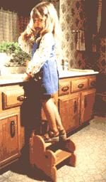
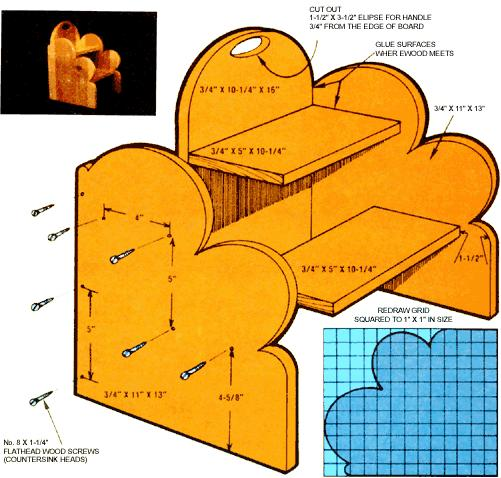

"Not only does this little stepstool save Mom and Pop some steps," writes Gall E. Johnson from Duluth, Minnesota, "but It also gives your Little One the all-important opportunity to do for him. or herself Some things that he or she is perfectly capable of doing ... like getting that umpteenth drink of water, brushing teeth, or just plain washing up."
You can easily make your own step save with a few common workshop tools and 52" length of 1"X12" board ... and, best of all, says Gall, the handy stool can be constructed In less than an hour (or two, If you're slow)!
Kick this project off by tracking down a power drill (with an assortment of drill bits nd a countersink), a hand-held electric saber saw, a screwdriver, some wood glue (Elmer's Glue-All Is fine), and a sheet or two of fine sandpaper. You'll also need 14 No. 8 X 1-1/4" flathead wood screws, a can of wood putty, a piece of string, some polyurethane or shellac, and a paintbrush.
Once you've gathered all of your equipment, cut the plank of wood Into five pieces with the dimensions shown on this page (remember that a standard 1"X12" board is actually 3/4" thick and slightly over 11" wide). Don't worry about the rounded ends right now ... you'll take care of them In the next few steps.
After the board Is cut and set aside, enlarge the grid pattern shown elsewhere in this article so that the squares are 1" X1I " in size, then trace the shape on the larger grid and transfer It onto the two 11 " X 13" side pieces.
Next, take your saber saw (or use a jigsaw if you have one) and cut out the scallop shapes on these two sections. Then, measure 11-inches from one end of the 3/4" X 10-1/4" X 16" back piece (the side that you measure from will become the bottom) and pencil a line across the board at this point. Determine the center of the line, and-with this mark as the pivot point-draw an arc across the top of the board from one side to the other using a pencil and length of string as a compass).
You also might want to make a handle for your stool by marking off a 1-1/2" X 3-1/2" ellipse directly In the center of the back piece, about three-quarters of an Inch down from the top edge. With this done, you can cut the stool's back to the rounded shape as shown, and carve out the hole for the handle (you'll have to drill a starting hole within the "handle" first, then cut the piece of wood out with your saber saw).
Now place the back of the stool upright on a flat surface, and position the two side sections next to It so that the edges of the 11" X 13" boards are flush with the back of the 10-1/4" X 16" piece. Drill three 7/64" pilot holes (about 5 inches apart) through each side board and Into the edge of the back piece, then use a 6/32" bit and enlarge the holes In the side boards to accommodate the screw shoulders. Finally, countersink these enlarged holes on the outer surface ... so the screws will be recessed when they're Installed.
At this point you should temporarily fasten the back and side pieces together, then take your two 3/4" X 5" X 10-1/4" boards and place them in position ... with the top of the lower stop five Inches above the bottom of the stool and its forward edge about one and a half Inches behind the stool's front edge. The upper stop should be flush against the back of the stool with Its top surface five Inches above the top of the lower step.
When the stop boards have been positioned correctly, drill your 7/64" "pilot" holes through the stool sides and Into the steps ... two (about four Inches apart) in the and of each stop board should be fine. Then, enlarge the holes In the stool sides with a 5/32" bit as before, and countersink the outer surfaces of the holes.
Remove the screws that hold the stool's back and sides together and smooth all of the surfaces of the wood with some fine sandpaper. Then, run a bead of glue along all the screw-fastened surfaces where wood meets wood and assemble the stool with your No. 8 X 1 1/4 wood screws.
Finally, fill all the screwhead holes with some wood putty, and the filler smooth, and cover the entire stop saver with the polyurethane or shellac of your choice. Let the sealant dry, and your tyke's now "toy" Is ready for use.
Yap, Gall couldn't be happier with her little stepstool ... and no wonder. "It saves a lot of wear and tear on us big folks, and at the same time gives our daughter a chance to learn ... believe me, that youngster could barely wait for the shellac to dry and her world to grow!"
|
 STAFF PHOTOS |
 |
|